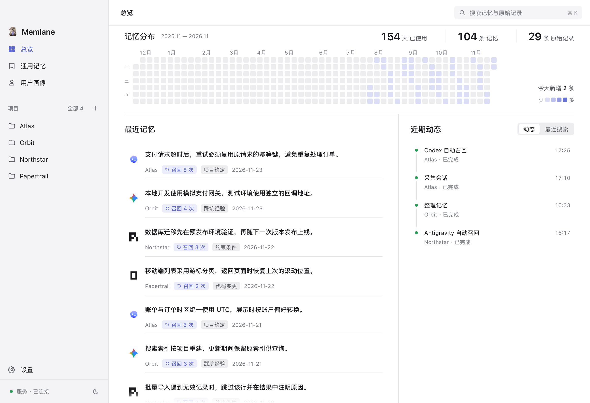
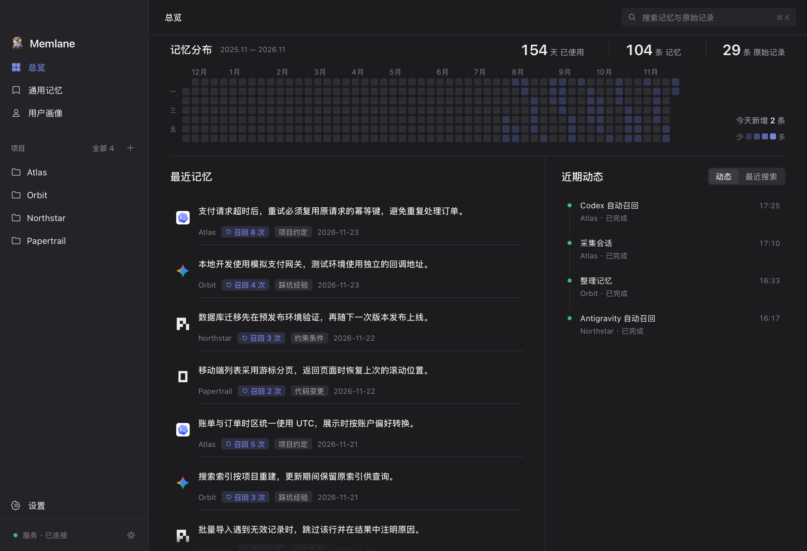
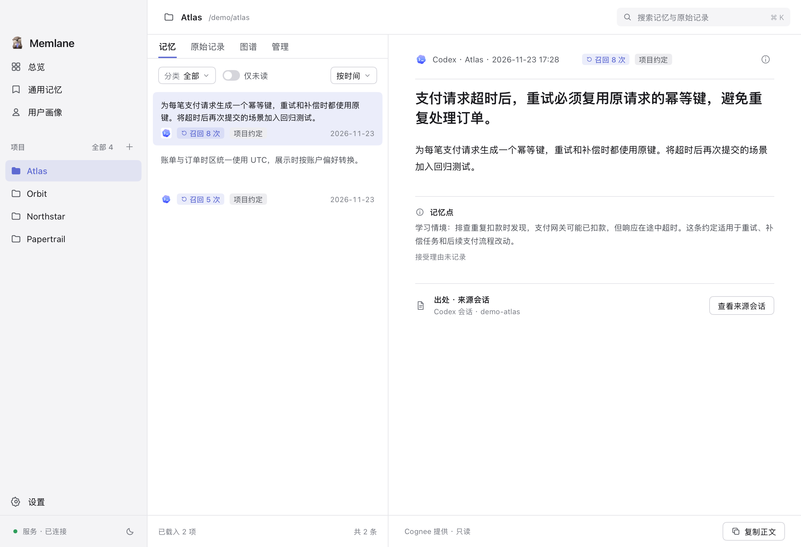
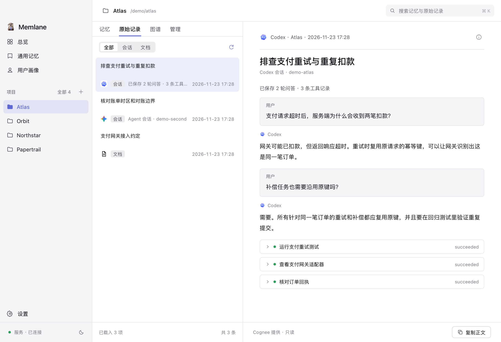
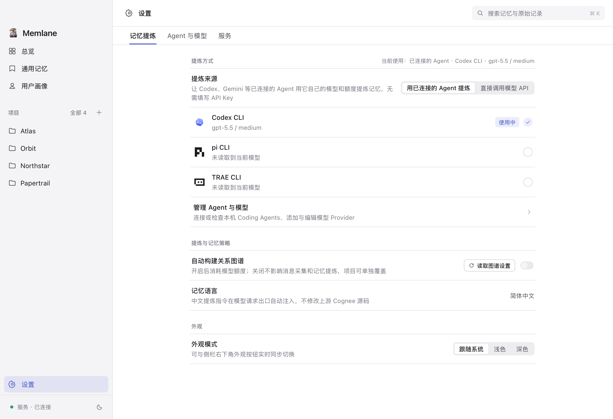

Codex排查支付重试
重试必须复用幂等键Atlas · 项目记忆
Antigravity接着改支付流程
Memlane for Mac
项目记忆留在你的 Mac 上。
换一个编码 Agent，也能用上之前积累的项目知识。
Apple Silicon · macOS 26 或更高版本


用 Codex 排查支付重试，用 Antigravity 接着改代码。项目里已经确认的约定、踩过的坑，后续 Agent 可以在需要时找到。

本次内测支持 Codex、Antigravity、pi 和 TraeX。
打开原始记录，回看 Agent 当时的问答和工具操作，了解项目约定是在什么情况下定下来的。

选择已登录且支持模型代理的本机 Agent，Memlane 就能用它现有的 Coding Plan 或订阅额度整理项目记忆。无需另购模型 API 套餐，也无需再填一个 Provider API Key。

Apple Silicon · macOS 26 或更高版本
内测安装包待发布
查看安装指南